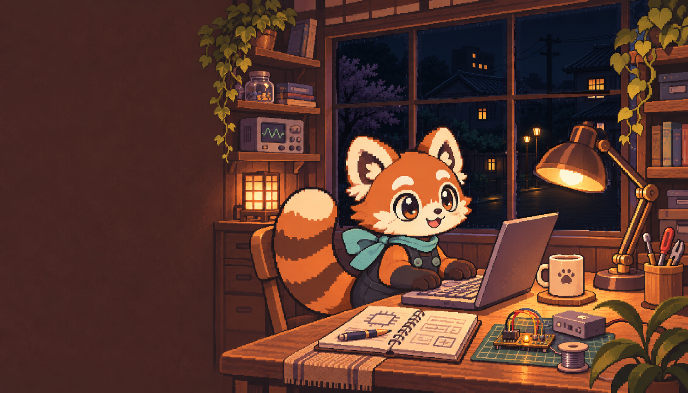
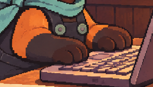

Tinker Panda · typing source motion study
Unapproved source study for checking paw shapes, registration, contact and timing. This offline preview uses the exported artwork; it is not the actual browser recording. Visual rain, steam and blinking belong to the website and are omitted here.


Playback uses the authored 1360 ms burst and a fixed 8-second resting hold. The website varies holds between 6.8 and 9.2 seconds. Manual controls scrub every exported pose.
Timing and pose parameters · Environment assembly notes